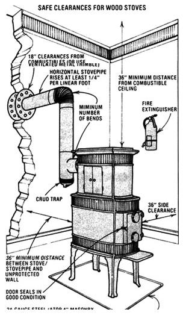
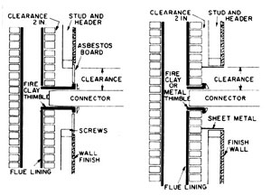
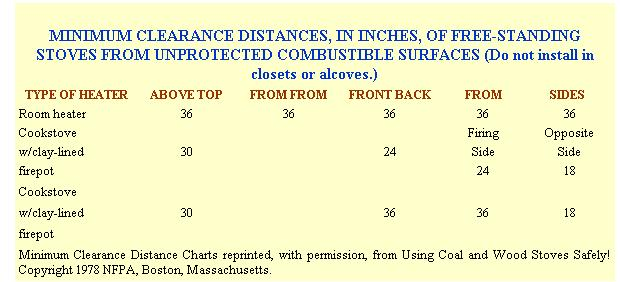
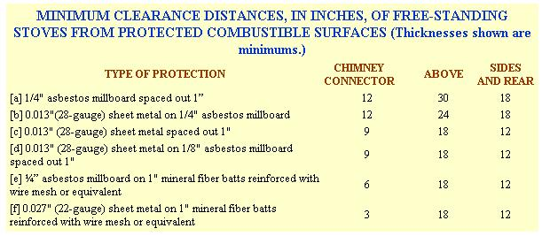
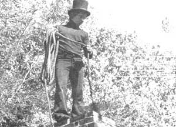

Thoreau wrote of the stumps which he pulled out from his field at Walden Pond: "They warmed me twice, once while I was splitting them and again when they were on the fire." The following is dedicated to helping folks who heat with wood prevent an inadvertent third warming.
Once upon a time, the safe operation of a wood stove may actually have been (as so many people claim it still is) a matter of using plain old common sense. But-before you assume that your knowledge of campfires and fireplaces will carry you through the installation and use of one of today's complex airtight heaters-consider the fact that not even the "experts" can agree about just what precautionary steps prudent wood burning should involve.
Much of the controversy centers on the fact that safe stove installation and operation are often either inefficient or inconvenient (or both!). And despite the fact that a compromise between absolute safety and 100% efficiency is often necessary, no one can tell you what margin of safety (at the expense of what degree of efficiency) you should choose. However, once you understand the problems and the alternatives involved in achieving the best compromise, you should be well equipped to make such decisions yourself.
Far too few consumers know just how important it is to choose a stove of the right capacity for the area to be heated. After all, wood heaters are anything but inexpensive in these days of energy consciousness, and financial pressures often force many folks to opt for a small unit . . . a decision which can lead to overfiring.
And, since the generally recognized safety standards for wood stove installation are based upon normal operaing temperatures (with comfortable margins for error), it's possible for an overheated firebox to ignite walls or other flammable materials which are beyond the "safe" perimeter. (Did you know, for example, that sustained temperatures of slightly over 200°F can actually cause wood to combust spontaneously?)
On the other hand, some shoppers buy top-of-the-line models . . . assuming that a large stove will provide them with heat in reserve. Unfortunately, although the dangers of an underfired heater are less obvious than those of an overfired one, they are equally serious.
Since most owners of large stoves will often reduce the output of their heaters by restricting the air supply with a damper-a technique that reduces burn efficiency, makes more smoke, and forms creosote rapidly-buying a stove that's too large for your needs can be the indirect cause of chimney fires. In fact, such accidents have been known to happen within the first week after the installation of a new stove and chimney.
Because of the chance of such fires, it's imperative that any supposedly airtight stove which is "throttled" (to extend its burning time) actually be sound and well-sealed. Your best defense against a raging chimney blaze is to close up the stove and thus shut off the smokestack's oxygen supply.
Two methods of connecting a chimney connector to a chimney flue where the connector must pass through a combustible partition wall. Instead of the esbestos board shown, sheet metal may be used, or a metal lath and plaster finish may be applied in that are.
Reproduced, by permission, from Using Coal and Wood Stoves Safely! Copy right © 1978 National Fire Protection Association, Boston, Massachusetts.
However, if your stove has any leaks around its door(s) or damper-or through the body of the stove itself-you can create a disastrous situation by attempting to starve a chimney fire.
You see, if there's a small flow of oxygen to the smoldering creosote, the O2 will accumulate until enough is present to allow the chimney's coating to flash. That ignition will quickly consume all the available air, and the fire will expire again until the oxygen reaccumulates. Repeated flashing-which can happen as often as several times per second-has been known to break apart stovepipe and even masonry chimneys!
All new stoves approved by the Underwriters Laboratories (UL) meet standards of soundness and engineering, but secondhand units often suffer from deterioration . . . so check any used heater carefully! (You can find a number of good hints for selecting an older stove in Barry Dordahl's article "Wood-Burner Restoration" on page 24 of MOTHER NO. 59.) Plus, be sure that the stove you're buying is designed to burn wood: Few coal stoves can accept logs, and no wood stove can safely burn coal without the appropriate grate.
Your first concern when installing a wood stove is to maintain safe clearances. Follow the specifications in the accompanying tables, and-if you have a limited space for your stove-use suitable thermal barriers to safely reduce the clearance distances. Note that the National Fire Protection Association (NFPA) specifies asbestos millboard-not cement board-and/or steel plate. But, MOTHER hopes that-because of the harmful effects of asbestos-conscientious readers will opt for steel and an adequate air space.
Moreover, when your wood stove's body is set at least 18 inches above a flammable floor (or even if the framework supporting this surface can burn), line the floor-both under and near the heater-with 24-gauge sheet metal. If the clearance is less, however, use four inches of hollow masonry underneath the metal.
Of course, the positioning of your stove will determine the amount of stovepipe necessary to connect it to your chimney. The NFPA specifies that as little stovepipe as possible should be used. However, it's generally accepted that every four feet of pipe (up to about 12 feet) that's exposed to inside air space will yield about 10% "bonus" heat from a stove. Uninsulated stovepipe does an excellent job of radiating the heat from flue gases.
However, beyond the obvious danger of someone's being burned by the hot metal surface, there are two other basic hazards connected with using an extended stovepipe. First, as the pipe's length increases, so does the possibility that its joints will break during a chimney fire.
And then there's the question of whether the heater's draft is adversely affected by a long stovepipe. You see, the heat of the flue gases is dissipated through the metal, and this does reduce the thermal draft effect . . . but longer sections also tend to improve draft by increasing the chimney's volume. The trade-off (as well as the point where one effect overwhelms the other) is an uncertain one.
The uninsulated stovepipe should clear all flammable objects by the same distances suggested for stoves in the tables of clearances. Again, you can reduce the necessary space by using a thermal barrier. It's also possible to use insulated factory-built chimney (with clearances as specified by the manufacturer), but-if you do so-you'll lose much of the heat you would have gained from the stovepipe. (Plus, the factory-built product can cost around $1.50 per linear inch, while regular stovepipe currently sells for about $1.50 per linear foot!)
Most wood-heating veterans now recommend that the female ends of the pipe sections be mounted upward ... to prevent creosote from leaking out around the seams. However, there is still a small counter-current philosophy which believes in setting the female junctions downward ... to keep smoke from escaping. A safe compromise is to mount the female ends up ... and then seal each junction (except those joints which facilitate removal of the pipe for cleaning) with furnace cement and three sheet metal screws spaced around the circumference of the joint.
The NFPA also specifies that all horizontally run stovepipe should rise (away from the stove) at least 1/4 inch per linear foot. Again, not all stove experts agree on this point. The basic idea behind the steady-rise stipulation is that the flue's draft will be aided by the slight upward flow. Whether or not this actually is the case, it's an easy enough requirement to follow . . . and a little extra safety never hurt anyone.
Should you decide to use an extensive run of stovepipe, support the tubing (usually by suspending it with wires) at least once every six feet. In addition, always try to employ a minimum number of bends-using the most gradual curves possible-to reduce turbulence in the exhaust gases.
Remember, too, that even the most skillfully fitted and maintained stovepipe has a maximum lifespan of three years. After the first season you should check your pipe for soundness regularly. You can make a fairly accurate test by squeezing the pipe in your hands. If you are able to crush the walls in your grip, the corrosive creosote has eaten away too much metal for the installation to be safe.
(One useful capability-that you can build in when you install your heater-is a crud trap. Where the pipe leaves the stove-in most cases, horizontally-simply add a tee fitting instead of an elbow. Then plug the lower end of the tee with a removable cap that's fastened with sheet metal screws. When the time comes for cleaning or inspection, this opening will give you easy access to a section that is usually the longest straight run of stovepipe.)
There are four basic ways to connect stovepipe to a chimney: [a] direct connection to a masonry chimney, [b] passage through a flammable partition into a masonry chimney, [c] entry into a fireplace and chimney, or [d] outlet through a wall or ceiling via factory-built metal chimney.
Any stovepipe inserted directly into a masonry chimney should penetrate to the inside edge of the masonry liner (but no farther), and has to be sealed with furnace cement . . . unless a masonry thimble is set into the chimney to accept a slip-in section of pipe. (If you are unable to gain ready access to this connector for cleaning, be sure to use a thimble so you can remove the pipe periodically to scrub it.)
Any connector which passes within 18 inches of a flammable partition falls into the second category. An NFPA regulation (number 211) specifies that-in such cases-the installation include either a vented metal thimble (of a diameter 12 inches larger than the pipe) or a masonry thimble ringed by at least eight inches of fireproof brickwork. The only other prudent option would be to leave a minimum of 18 inches of space around the outside of the stovepipe, and then close the hole with a flame-resistant barrier.
When using a fireplace chimney for wood stove exhaust, the entry to the fireplace must be sealed, or-if the connector joins the flue above the fireplace-the chimney must be plugged below the point of junction. This precaution not only prevents burning embers from falling down into your fireplace (and potentially onto your floor), but also maintains the proper draft for your stove. Ideally, all such chimney entrances for wood stoves should be above the fireplace, but practical considerations often demand that the connection be made through the sealing partition and into the fireplace itself. To prevent heavy creosoting (especially in any fireplace with a cool external chimney), you should extend the stovepipe so it turns up and into the chimney.
NFPA regulations prohibit the passage of stovepipe through any floor, ceiling, or fire wall. You may, however, pass your pipe through either a wall or a floor/ceiling if you use factory-built insulated chimney. If you don't have a suitable masonry chimney, this rather expensive piping is your only choice. While you're laying out your cash, though, you can take heart in the efficiency of the ready-made chimney material. You will have a better draft- and slower creosote accumulation-for using it.
If you do have a masonry chimney you'd like to use, there are several precautions to observe before firing up your new stove. For one thing, the cross-sectional area of any chimney should be approximately 25% larger than is the cross-sectional area of the stovepipe it serves. (Add about 4% for each 1,000 feet in the altitude of your home's geographical area.) A chimney that was built to serve an oil, gas, or coal furnace will probably be much too large for a wood stove. You can get around the problem by either running stovepipe all the way up the chimney, or (in some cases) by placing a cap of the appropriate size atop the chimney.
An old chimney should also be checked for soundness before a wood stove is hooked up to it. (A technique called "puffing", which involves plugging the top of the flue and starting a small and smoky fire below, is a useful test . . . the smoke will erupt from any leaks in the chimney liner.)
You should also clean the chimney before firing up your wood-burner if there's any significant creosote accumulation at all. Most experts agree that a layer of more than 1/4 inch of the black goo constitutes both a fire hazard and a hindrance to efficient drafting. Either call a local sweep or read up on the techniques and do the job yourself. (An excellent manual on sweeping is Christopher Curtis and Don Post's book. Be Your Own Chimney Sweep. . . published by Garden Way and available in many bookstores for $4.95.)
What's more, if you have an external (running on an outside wall) chimney, you'll have to decide whether the unit is worth using at all. Outdoor chimneys tend to be about 20% less efficient than such structures that are inside the house . . . because the cold air prevents the masonry from conveying much heat into the building. Furthermore, the same cooling effect encourages rapid creosote formation. Unless your outside chimney is in excellent condition and perfectly suited to your stove, it may pay to use factory-built insulated chimney instead.
Although wood stove safety and efficiency are often at odds, the two work hand in hand in the matter of chimney height. A tall chimney will both protect your house from sparks and ensure an adequate draft. The outlet of the flue should be at least three feet above the roof level at its exit . . . and no less than two feet above any portion of the roof that lies within 10 feet.
Ironically, the actual firing of your stove is the biggest trade-off in the safety/efficiency/convenience game. If you were to keep a small fire burning with an adequate supply of oxygen (an at least 50% open draft), you might never have to worry about creosote . . . but you'd also either be up at least three times a night to add wood or wake up to a very cold house. Assuming that you do intend to keep your stove's fire going all night- and keep your toes snuggled warmly under the blankets-there are a few precautions and specific techniques which can help you control the problem of creosote buildup.
Contrary to popular opinion, burning hardwood (or even an exclusive collection of seasoned wood) will not prevent creosoting. However-while a hardwood contains just as much of the creosote-producing nasties as do the softer varieties- green wood can creosote especially heavily if it's not burned correctly. Because the wood's moisture must be converted to vapor before the fuel can produce the gases which burn, unseasoned or damp wood can lead to inefficient, soot-causing combustion if the timber doesn't have both sufficient draft and an established bed of burning coals to help it get going.
One good technique for producing a relatively clean long burn is to load your stove- with a mixture of partially seasoned and well-dried wood-about half an hour before bedtime. Leave the damper open, to give the fire a good start, until you retire. Then damp the strongly burning blaze down for the evening.
In most cases, you probably shouldn't buy a stove with a secondary air inlet to help control creosoting. The NFPA feels that such an option usually makes combustion less efficient by introducing cold air into the rising gases. Unless the stove in question has an excellently designed secondary draw (that keeps temperatures up in the 1100°F range), there's no way the additional oxygen will help the rising fumes ignite. Cool exhaust gases mean heavy creosoting.
Furthermore, never burn trash in your stove! Paper wastes tend to make a very hot fire for a short period of time, encouraging the ignition of any creosote deposits in your stovepipe. And synthetic wastes-such as plastic wrappers-produce hydrofluoric and hydrochloric acid when they burn. The effect of such corrosives on stovepipe (and the body of your stove) could very possibly lead to disaster.
You may also find that leaving a one-inch-thick layer of ashes at the bottom of your stove can help your heater sustain a hot fire. The residue acts as a reflector and insulator ... so always be sure to leave some ash in your firebox. And, when you dispose of the wastes, keep in mind that ashes combined with water form a caustic lye solution.
The frequency with which your stove will need cleaning will depend on how you've decided to deal with the safety/ efficiency compromise discussed in this article. A stove which is not damped excessively ( and which has a well-designed chimney of factory-built, insulated pipe) might go an entire season without needing a "sweep". On the other hand, even a comparatively well-installed system could- when made to hold a fire all night-need cleaning as often as every two weeks.
Thorough maintenance is the only way you can make up for using an efficient-but dirty-burn technique or a less-than-perfect flue. After installing a new stove, be sure to check the stovepipe for creosoting every two weeks until you become accustomed to the heater's behavior. (Any deposits over 1/4 inch thick indicate that the pipe needs attention.) It's possible to monitor the accumulation in your stovepipe with some accuracy by tapping on the sections with a metal object. Once you're used to the ringing sound that a clean pipe makes, the dull thud of a dirty one will be distinctive.
You can save money, in the long run, by sweeping your own chimney . . . but don't attempt to do so unless you plan to learn how to perform the job properly and with the right tools. (There's no substitute for a chimney brush . . . various combinations of chain in burlap bags and caustic chemicals are not particularly effective and can easily damage flue liners.) In MOTHER'S part of the country, calling out a sweep runs about $40. Such an expense would be tolerable once or twice a year . . . but if your system needs a cleaning once a month, the do-it-yourselfer's investment in time, books, and equipment would pay off quickly.
Almost every wood-burning household eventually experiences a chimney fire . . . although the blazes are usually quite mild. There will be no doubt in your mind when one occurs, however. The stovepipe will become very hot (perhaps even to the point of glowing), and there will be a rush of air through the draft in the stove. If you go outside, you'll often see a stream of sparks spewing out from the chimney.
If such a blaze begins, call the fire department! Immediately! (You may not need the professionals' help, but by the time you know you do, it could be too late.) Then, on your own, try to deprive the flame of oxygen by closing down the damper. If your stove isn't airtight, this move may only reduce the intensity of the fire ... or it could produce the creosote-flash pounding effect discussed above under "Picking a Stove". Should this condition occur, open the damper enough to produce a constant burn.
If you can't oxygen-starve the fire, use a flare-type extinguisher (the kind specifically designed for chimney fires . . . such as a Chimfex unit, available through most woodstove dealers), which is a safety device that every wood burner should have close at hand.
However, don't pour water into your firebox! The rapid cooling of the stove's metal body would probably cause it to crack. Some old-timers have suggested throwing a large quantity of salt onto the fire. Such a treatment will help to extinguish the flames in the firebox, but will have a limited effect on the chimney fire . . . and could corrode the body of the stove.
The fire will probably last only a few minutes . . . but on rare occasions a chimney blaze might last for up to an hour. Keep checking the stovepipe temperature, and watch nearby flammable objects to see that they don't become dangerously hot. In addition, stick your head outside every once in a while to be sure that the sparks coming from the chimney haven't ignited anything in the area (especially your roof!).
Once the fire's out, clean and inspect your stove, chimney, and stovepipe . . . and resolve to do the job more often in the future! The old saying that chimney fires clean out creosote is simply bunk! Often the fire merely transforms the creosote into a thicker, crustier layer . . . and the transformation usually leads to very rapid additional accumulations. Check the flue liner carefully for damage, too. Chimney fires can produce temperatures as high as 2500°F . . . which may crack masonry or warp steel.
Despite the fact that wood stoves do have the potential to be dangerous (as do any appliances . . . whether they operate on electricity, gas, oil, kerosene, or wood), insurance company statistics show that the vast majority of woodstove-related accidents are the result of either improper installation or lack of maintenance. And, of course, any man or woman who's as well informed as you are now shouldn't be guilty of such failings. With the right kind of care and upkeep, your wood heater or cookstove can be a practical, aesthetic, and downright heartwarming addition to your home.
|
 Chimneys should be checked at regular intervals for excessive creosoting... and cleaned?when necessary?by an expert (or a stove owner who uses the proper tools. |
 |
 |
|
 |
 |
|